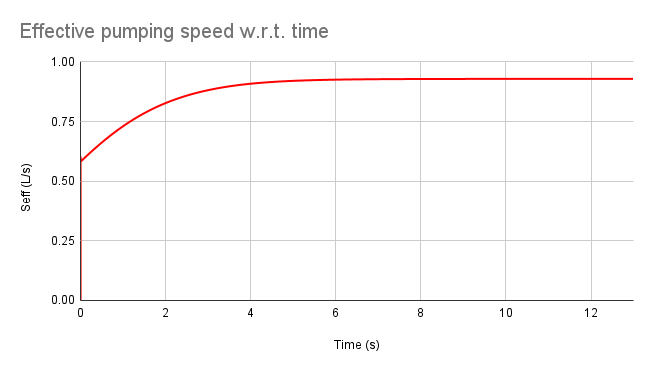
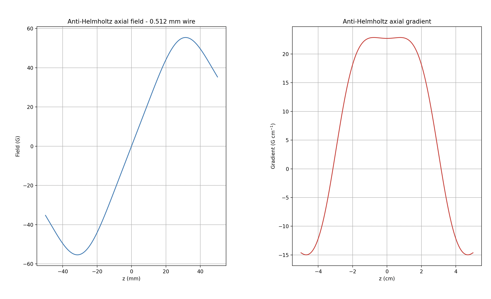

OpenQuantum Internship
Designing low-power quadrupole coil geometries and simulating ion pump dynamics for advanced spectroscopy modules.

During my internship at Exascale Systems, the primary challenge was twofold: optimize the vacuum generation processes and design a highly efficient magnetic geometry for atomic trapping.
The goal was to engineer a quadrupole coil system capable of sub-doppler-cooling via the Zeeman shift. The strict constraint was keeping power consumption under 35W while achieving a specific magnetic field gradient necessary for the trap configuration.

Sputtering Ion Pump Simulation
Anti-Helmholtz Coil GeometryBefore physical prototyping, extensive simulation was required. I simulated Sputtering Ion pump dynamics and performances based on flow, discharge, and adsorption dynamics.
Simultaneously, I developed an automation software to generate optical layouts for spectroscopy modules such as Modulation Transfer Spectroscopy (MTS). This reduced manual configuration time and ensured layout precision.
 MTS Optical Layout Automation
MTS Optical Layout Automation